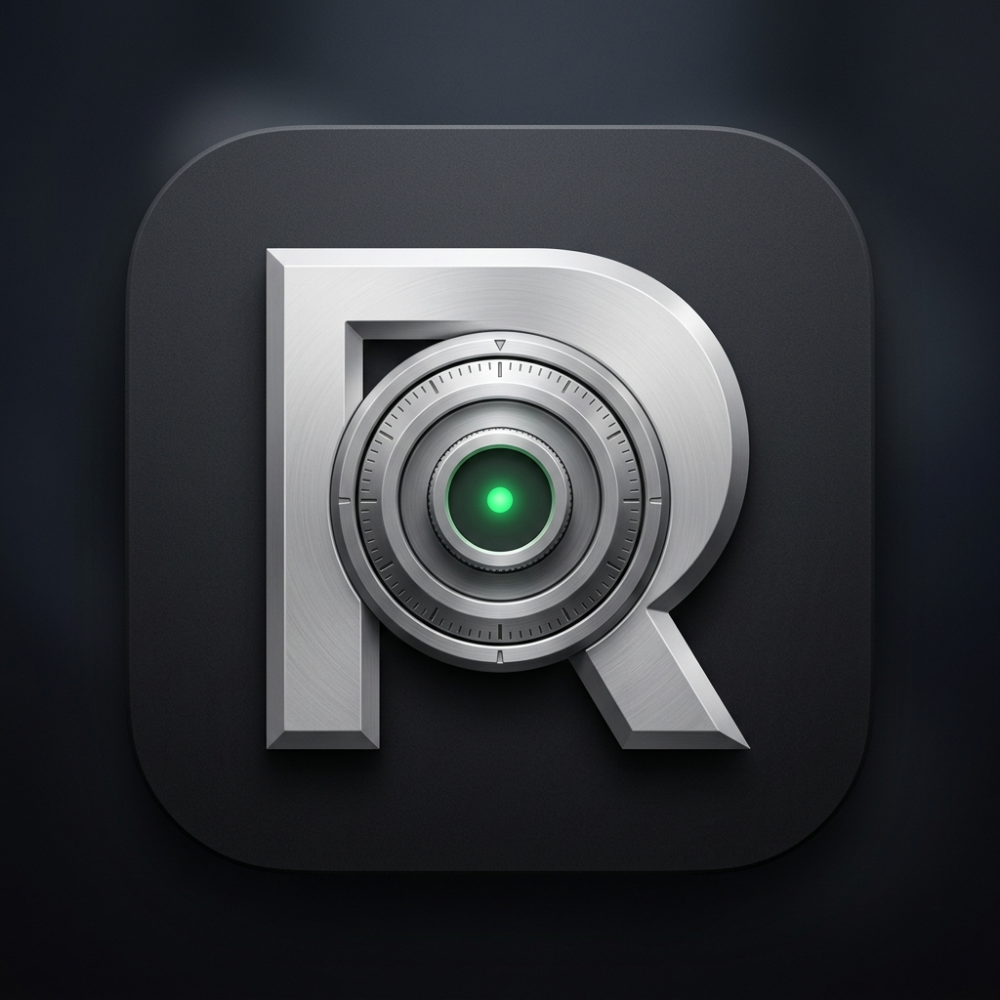
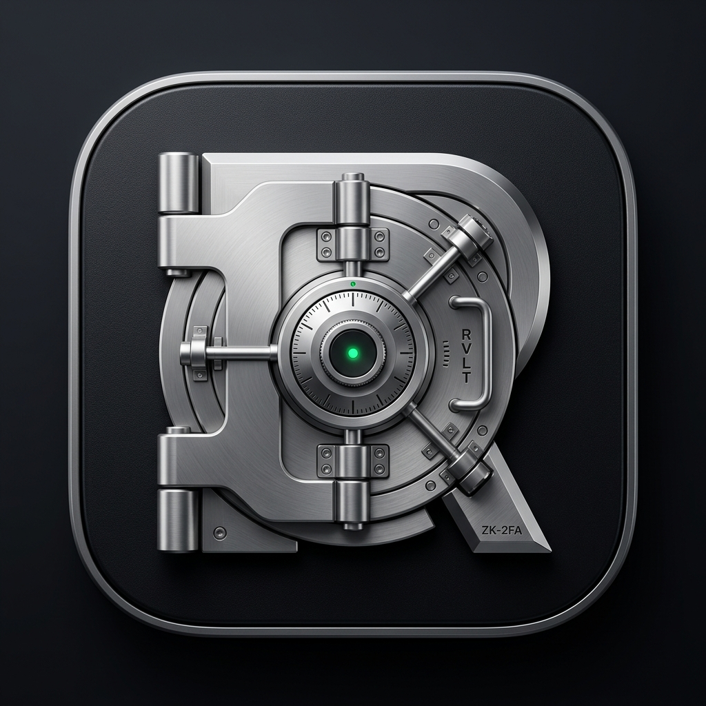

Ravalt Official App Icon & Symbol
Mengusung filosofi desain Notion & Obsidian: utilitarian, matematis, dan berfokus pada ketahanan kriptografi. Menggabungkan monogram huruf "R" dengan mekanisme brankas titanium (Vault Combination Dial) dan indikator aktif Zero-Knowledge Emerald.

Karakteristik: Finishing brushed titanium satin, dial kombinasi presisi mikro di bagian rongga counter R, serta inti optik hijau zamrud yang melambangkan status enkripsi lokal.


Karakteristik: Desain pintu brankas bank industri berat dengan engsel pengunci ganda, tuas pemutar 4-arah, dan plat kode RVLT anti-penetrasi.

Format SVG Resmi (Android & Web UI)
Aset vektor murni tanpa kehilangan ketajaman untuk Android Vector Drawable, launcher adaptive icon, dan web.


Kesesuaian di Layar Utama Ponsel (Power User Grid)
Melihat bagaimana icon Ravalt berdampingan dengan aplikasi produktivitas minimalis seperti Obsidian, Notion, dan GitHub.
Ketahanan Skala Resolusi (Scalability Matrix)
Memastikan simbol tetap terbaca jelas mulai dari ukuran splash screen (256px) hingga ukuran favicon terkecil (16px).
Anatomi Desain & Makna Simbol
1. Monogram 'R'
Pilar vertikal dan lekukan monolitik mewakili kedaulatan data penuh penggunanya (Sovereignty & Security).
2. Vault Combination Dial
Piringan kombinasi brankas dengan kalibrasi mikro dan deadbolt diagonal melambangkan algoritma Argon2id dan AES-256-GCM.
3. Zero-Knowledge Optic
Titik hijau zamrud di pusat dial melambangkan brankas yang selalu aktif terenkripsi tanpa server melihat password plaintext.
4. Obsidian Titanium
Warna dasar matte black squircle berpadu satin titanium memberikan kesan hardware cyber-security kelas korporat.